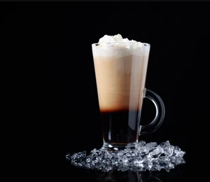

COLD COFFEE

* Cold brew coffee has gained popularity among coffee drinkers in recent years.
* Instead of using hot water to draw out the flavor and caffeine of coffee beans, cold brew coffee relies on time by steeping them in cold water for 12–24 hours.
* This method makes the drink less bitter than hot coffee.
* Though most research on the health benefits of coffee uses hot brew, cold brew is thought to offer many similar effects.
BENEFITS
1. May boost your metabolism
2. May lift your mood
3. May lower your risk of heart disease
4. May lower your risk of type 2 diabetes
5. May reduce your risk of Parkinson's and Alzheimer's disease